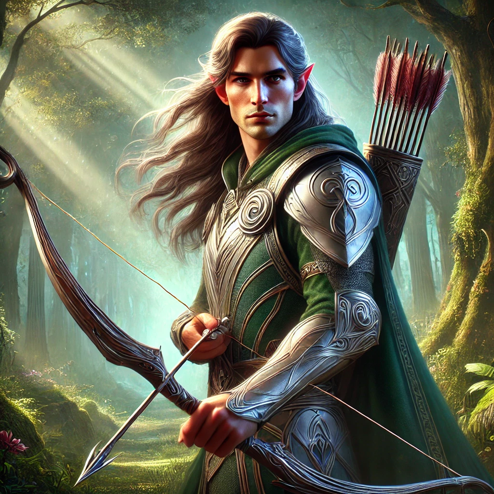
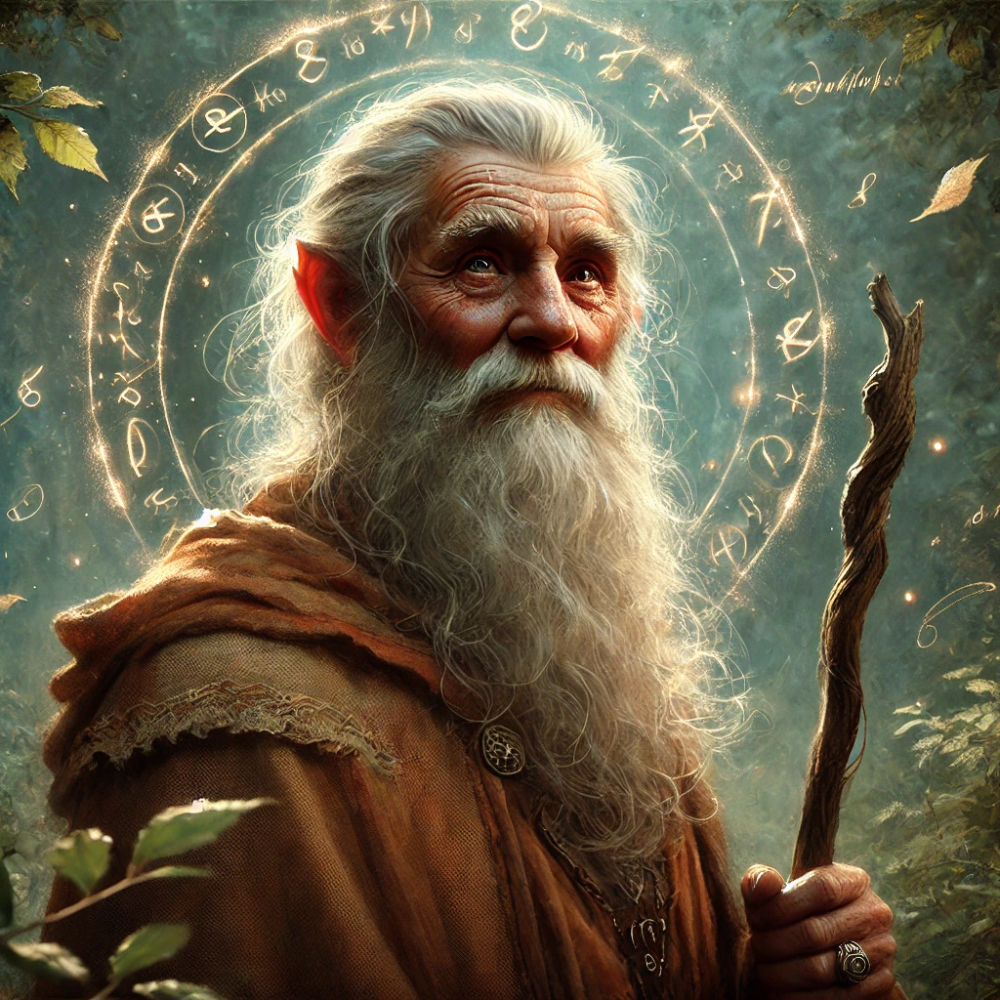

Lalaith¶
Lalaith ist die einzige Tochter von Königin Nairas und Prinzession von Ruathym.
Die Abenteurer finden Lalaith in einem Versorgungsposten der Golddurstigen, südlich von Baldurs Gate. Erst später erfahren Sie, dass sie eine Prinzessin ist.
Sie war mit ihren Begleitern (Aglarond, Elohir und Olwe) auf dem Weg nach Baldurs Gate.

Aglarond¶
Aglarond ist Mitglied des wissenschaftlichen Rats der Königin Nairas und Dekan der Universität von Ruathym.

Elohir¶
Elohir ist einer der besten Krieger des Reichs. Er ist berühmt für seinen Mut und sein Kampfgeschick.
Olwe¶
Olwe ist ein Magier.
